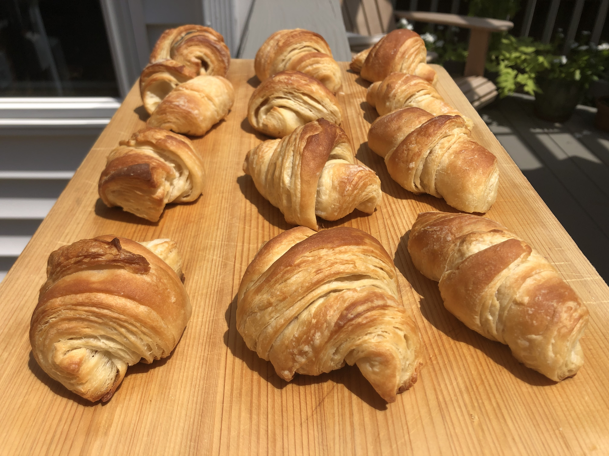

Croissants

Ingredients
Dough (Make Ahead for Overnight Rise)
- 1 and 1/2 cups whole milk, heated to warm (105°F–110°F)
- 1/4 cup packed light brown sugar
- 1 tablespoon plus 1/4 teaspoon active dry yeast (from two 1/4-oz packages)
- 3 and 3/4 to 4 and 1/2 cups unbleached all-purpose flour
- 1 tablespoon kosher salt
- 3 sticks (1 and 1/2 cups) cold unsalted butter
- 1 ruler
- 1 pastry brush